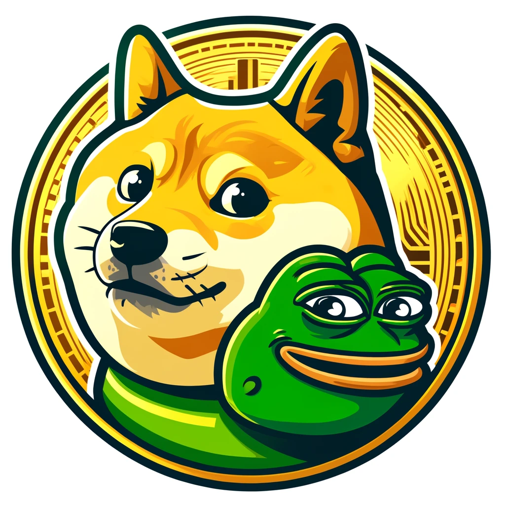

PEPEDOGE TOKEN
An innovative meme coin combining the legendary Pepe and Doge memes into one token on the Ethereum blockchain.
Token Contract: 0xBDB5...77126
Explorer: View on Etherscan
About PepeDoge
PepeDoge (PED) is an innovative meme coin that combines the legendary Pepe and Doge memes into one token on the Ethereum blockchain. The project aims to build an active community, develop a DeFi ecosystem, and launch various initiatives such as NFT collections, DAO governance, and exclusive Airdrop programs.
PepeDoge is more than just a meme—it’s a community-driven movement that believes in the power of decentralization and crypto culture. We are dedicated to creating a fun, secure, and rewarding ecosystem for every participant. PepeDoge is a community-driven project and is not affiliated with Matt Furie or the official Dogecoin project.
Project Goals
- 📌 Community: Build an engaged and active meme culture.
- 📌 Long-term Development: NFT collections, DAO governance, and more.
- 📌 Decentralization: Fully open-source and community-driven.
- 📌 Fair Launch: No pre-mine, no team allocation, 100% fair distribution.
Tokenomics
🔹 Ticker: PED
🔹 Network: Ethereum (ERC-20)
🔹 Total Supply: 842,487,169 PED
Token Distribution
- ■ 30% Uniswap Liquidity
- ■ 10% Team
- ■ 15% Marketing & Growth
- ■ 20% CEX Reserve
- ■ 10% Airdrop
- ■ 15% Community Rewards
Team
PepeDoge is a fully community-driven project with no central leadership. The development, marketing, and expansion of the project are carried out by a decentralized group of contributors and enthusiasts who share a passion for memecoins and blockchain innovation.
🔹 Decentralized Vision – The project operates on a decentralized basis, with decisions influenced by community input and governance mechanisms.
🔹 Transparency & Security – While the team remains anonymous, all smart contract operations and tokenomics are fully transparent and verifiable on the blockchain.
🔹 Community-Led Growth – The success of PepeDoge relies on its community. Everyone who contributes to the project, whether through development, marketing, or engagement, is a part of the team.
PepeDoge is not controlled by any single entity or organization but thrives through the power of its supporters and believers.
Roadmap – 2025
📌 Q1 2025: ✅ Launch website & social media, start marketing, develop app
📌 Q2 2025: Token presale, Uniswap listing, large-scale airdrop, partnerships
📌 Q3 2025: PepeDoge NFT collection, DAO governance, CEX listing
📌 Q4 2025: DeFi utilities, token burn, global marketing & expansion